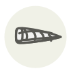

Salmon
Saumon
| Latin name | Salmo salar |
|---|---|
| Family | Fish & seafood |
| Origin | North Atlantic rivers |
| Season (France) | All year |
| Flavour | Rich · Buttery · Marine · Delicate |
| Typical price (France) | 15–28 €/kg |
What it is
Its Latin name may come from salire, “to leap” — the fish that climbs waterfalls to die where it was born. Scandinavian fishermen once buried salted salmon in the sand above the tide line: grav lax, “buried salmon”, now cured in dill on every smörgåsbord.
In the kitchen
Cook it less than you dare — the centre should still be silk. Skin-side down almost the whole way, and the skin becomes the best part.
Goes with
Dill Lemon Fennel Soy sauce Ginger Miso Cream
Same species
Also used with
Beluga lentil Bog myrtle Buckler-leaf sorrel Genmai miso Genmaicha Kaiware daikon sprouts
Something wrong here, or missing? Tell us